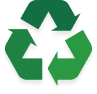
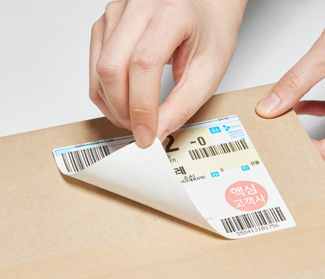
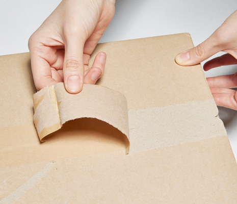
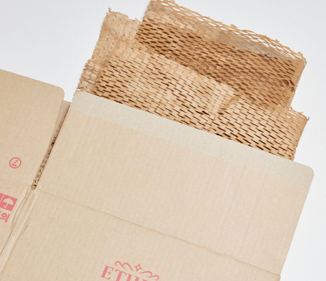

지구를 위한 활동 #1
LESS PLASTIC
플라스틱 비닐 소재의 포장재 대신 FSC 인증을 받은 종이 포장재와 박스를 사용하여
환경에 불필요하게 미치는 영향을 최소화하고자 노력합니다.
포장재
완충재 비닐 소재
박스 테이프 비닐 소재
포장재 FSC 인증 종이 소재
완충재 비닐소재종이소재
박스 테이프 비닐소재종이소재
산림 보호를 위한 노력
FSC 인증 지류 사용
종이소재의 포장제 단일화로 환경 부담은 줄이고 분리 배출 용이성은 개선했습니다.
RECYCLE
이렇게 재활용해 주세요.

Step 1
택배 송장은 박스에서 제거 후 일반 쓰레기에 버려주세요.

Step 2
떼어낸 종이 테이프는 폐휴지로 분류하여 버려주세요.

Step 3
박스와 완충 포장재도 모두 폐휴지로 버려주세요.
피부에는 이롭고 환경 부담을 줄일 수 있는
지속가능한 제품과 배송을 위해 고객님들과 함께 행동하겠습니다.